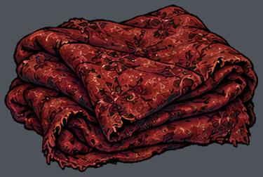
res://assets/fairytales/red_cottage/dressing/blanket/prop.png
实例 37；运行画布高度 0.37–0.57 m
尺寸 [375, 252]；透明轮廓 (6, 6, 368, 245)
语义支点、占地、挂点尚需逐图标注下列高度是画布高度，不是实体净高。透明包围盒不等于脚点或占地。

实例 37；运行画布高度 0.37–0.57 m
尺寸 [375, 252]；透明轮廓 (6, 6, 368, 245)
语义支点、占地、挂点尚需逐图标注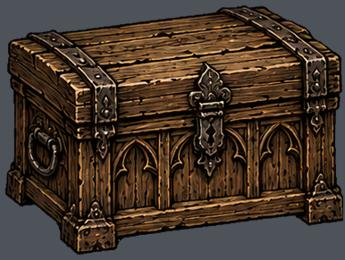
实例 15；运行画布高度 1.25–1.74 m
尺寸 [386, 291]；透明轮廓 (6, 6, 384, 285)
语义支点、占地、挂点尚需逐图标注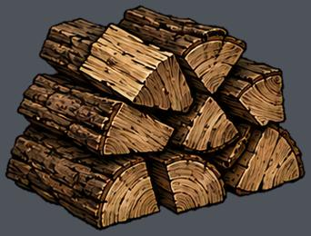
实例 75；运行画布高度 0.63–1.04 m
尺寸 [360, 274]；透明轮廓 (6, 6, 353, 268)
语义支点、占地、挂点尚需逐图标注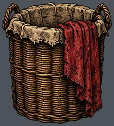
实例 16；运行画布高度 1.49–1.93 m
尺寸 [314, 345]；透明轮廓 (6, 6, 308, 339)
语义支点、占地、挂点尚需逐图标注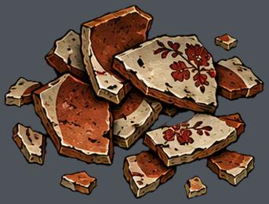
实例 70；运行画布高度 0.11–0.21 m
尺寸 [356, 270]；透明轮廓 (6, 7, 349, 263)
语义支点、占地、挂点尚需逐图标注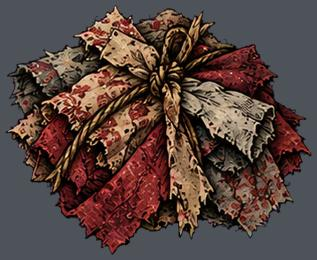
实例 74；运行画布高度 0.16–0.26 m
尺寸 [359, 294]；透明轮廓 (7, 6, 353, 288)
语义支点、占地、挂点尚需逐图标注实例 57；运行画布高度 0.11–0.21 m
尺寸 [366, 282]；透明轮廓 (6, 6, 359, 275)
语义支点、占地、挂点尚需逐图标注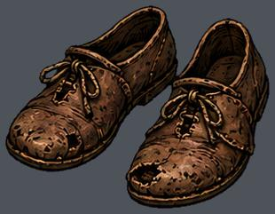
实例 30；运行画布高度 0.27–0.42 m
尺寸 [310, 241]；透明轮廓 (6, 6, 303, 235)
语义支点、占地、挂点尚需逐图标注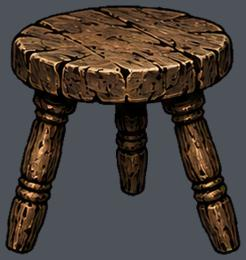
实例 38；运行画布高度 1.05–1.40 m
尺寸 [276, 292]；透明轮廓 (6, 6, 269, 286)
语义支点、占地、挂点尚需逐图标注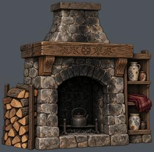
实例 8；运行画布高度 5.75–5.75 m
尺寸 [768, 755]；透明轮廓 (9, 9, 759, 746)
语义支点、占地、挂点尚需逐图标注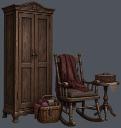
实例 7；运行画布高度 5.40–5.40 m
尺寸 [727, 768]；透明轮廓 (8, 9, 719, 759)
语义支点、占地、挂点尚需逐图标注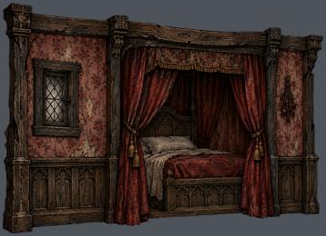
实例 14；运行画布高度 8.00–8.00 m
尺寸 [916, 665]；透明轮廓 (8, 8, 908, 657)
语义支点、占地、挂点尚需逐图标注